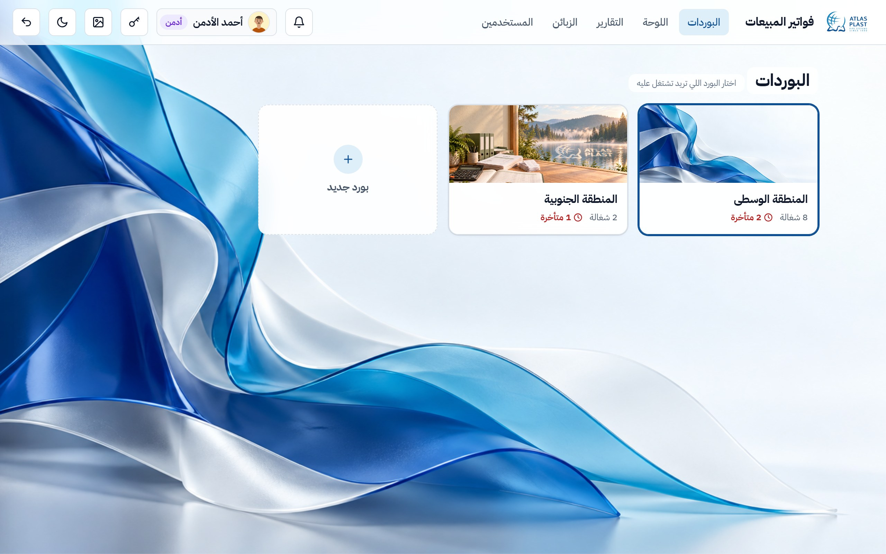
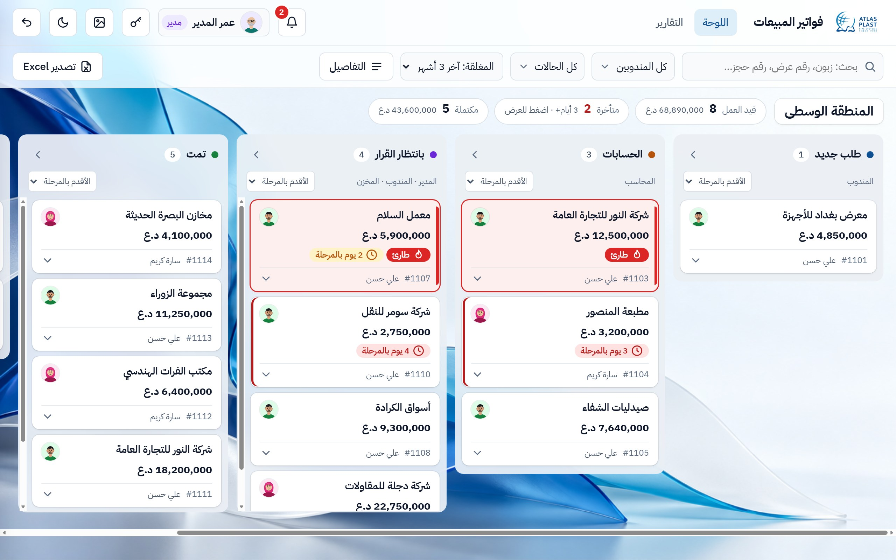
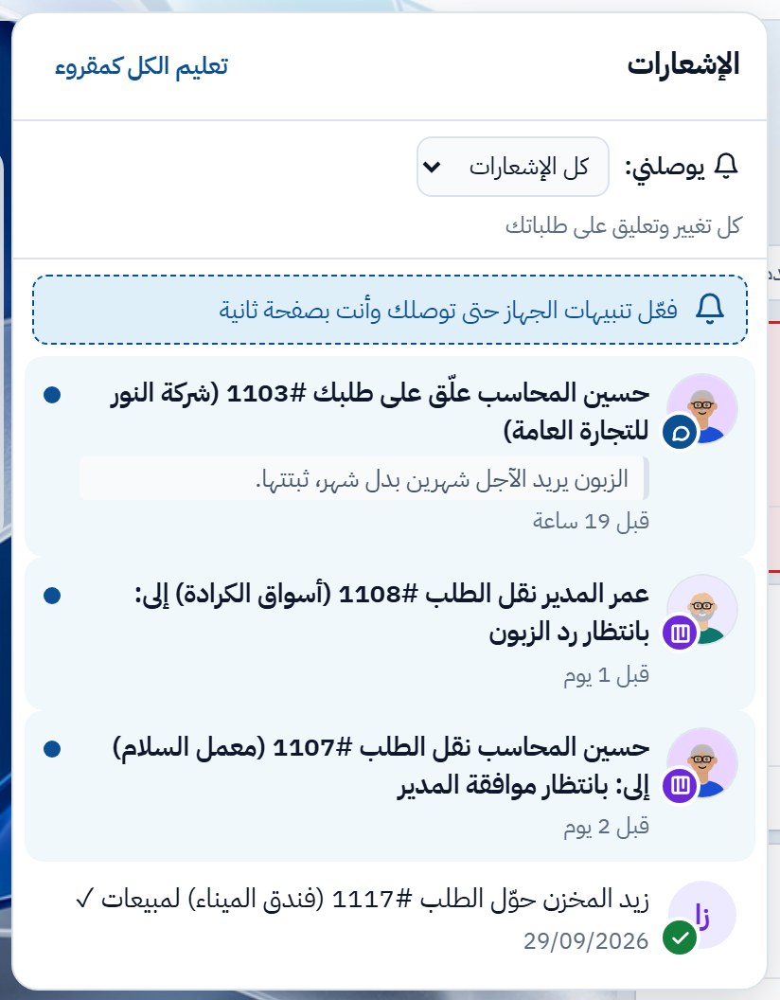
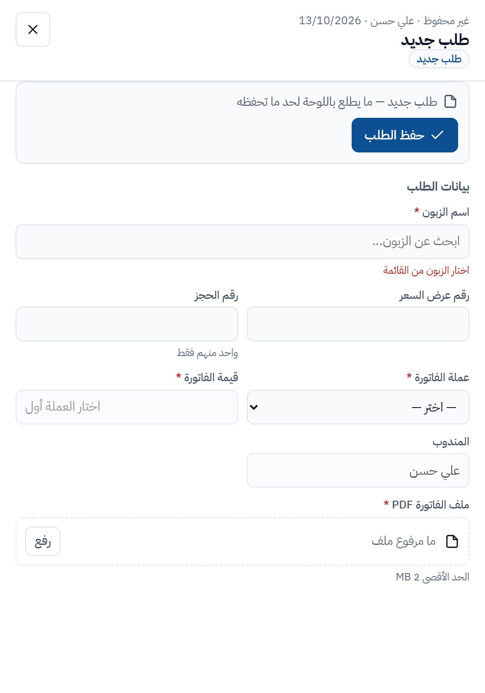
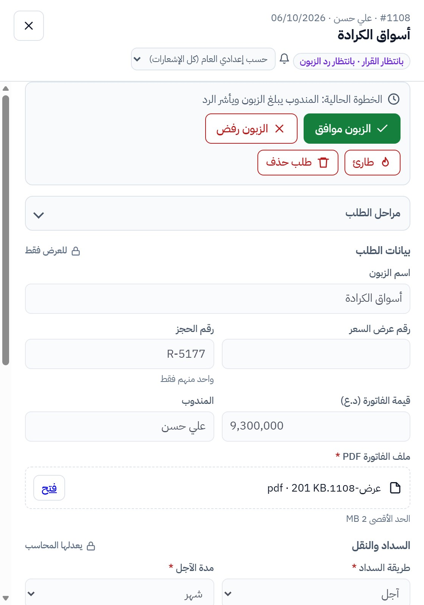
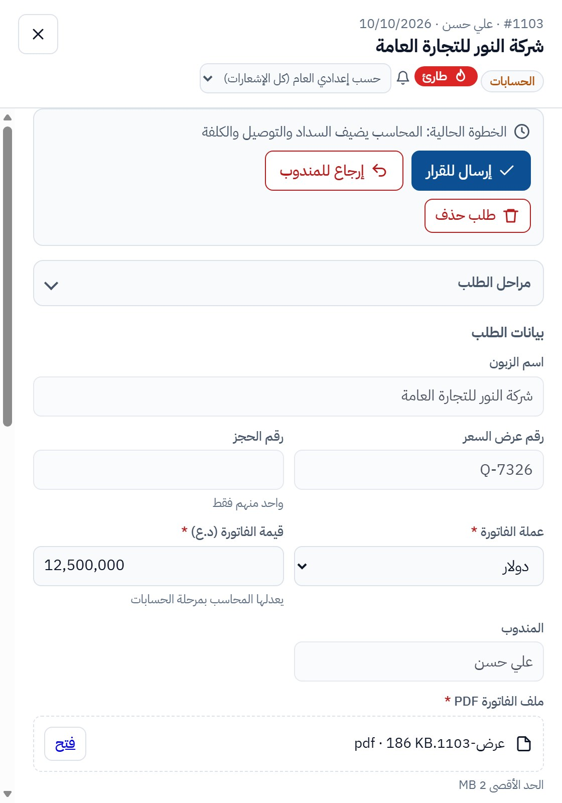
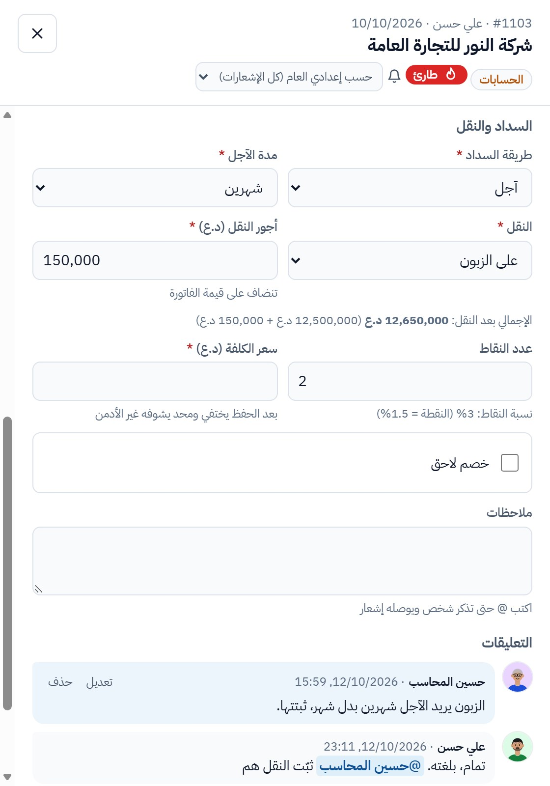
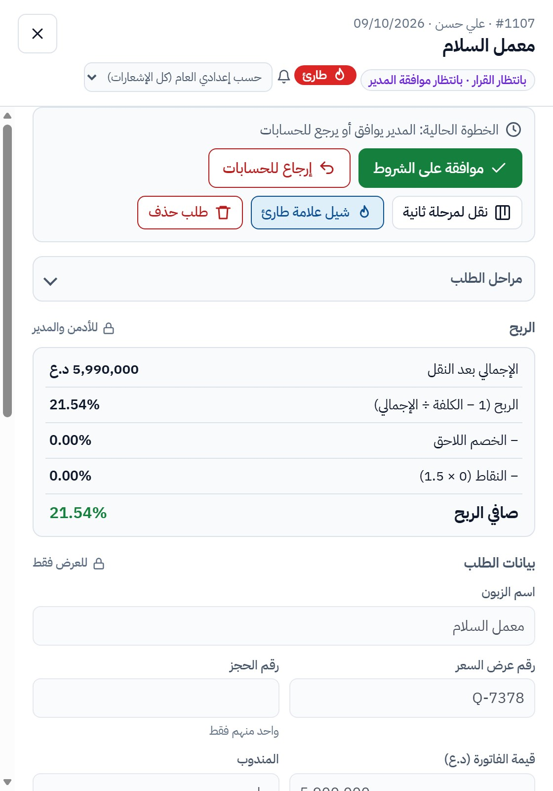
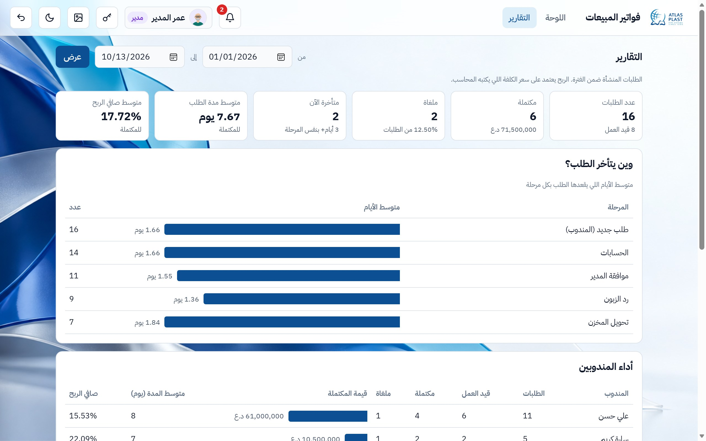
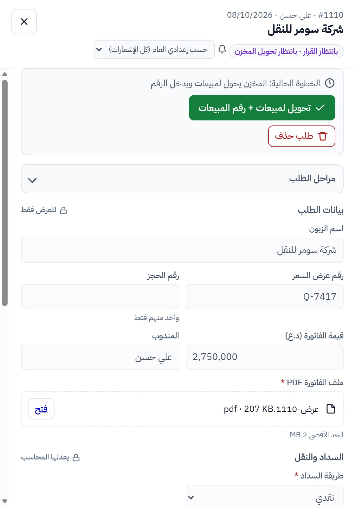

للمندوب والمحاسب والمدير والمخزن · اقرا البداية وبعدها قسم دورك
افتح الموقع واكتب اسم المستخدم والرمز اللي انطاك ياهم الأدمن.
إذا عندك أكثر من بورد (مثلاً المنطقة الوسطى والجنوبية) تطلعلك صفحة البوردات: اضغط على البورد اللي تريد تشتغل عليه. ترجع لها من زر البوردات فوك.
تغيّر رمزك من زر المفتاح 🔑 فوك. وتكدر تثبّت الموقع كتطبيق على الموبايل.

كل طلب كرت، والكرت يمشي بين الأعمدة حسب مرحلته:
طلب جديد←الحسابات←بانتظار القرار←تمت / ملغاة
بالكرت: اسم الزبون وصورة المندوب، القيمة، وتحت رقم الطلب. طارئ 🔥 يطلع فوك العمود، والطلب اللي صار له 3 أيام بنفس المرحلة يتلون أحمر.
اضغط الكرت حتى ينفتح الطلب. فوك اللوحة تكدر تبحث، وتفلتر حسب المندوب أو الحالة (الفلتر بيه بحث، تكتب جزء من الاسم).

بأسفل كل طلب اكتب تعليق. إذا تريد شخص يشوفه اكتب @ وأول اسمه واختاره، فيوصله إشعار.
تكدر تعدل أو تحذف تعليقك. وإذا الطلب غلط ولازم ينحذف، اضغط طلب حذف واكتب السبب، والأدمن يقرر.
الجرس فوك يوصلك عليه كل شي يخصك: طلب صار دورك بيه، أحد ذكرك بـ @، طلب رجع إلك، أو طلب متأخر.
من يوصلني تختار: كل الإشعارات، المهمة بس، المنشن بس، أو بدون.
وبكل طلب، جوه اسم الزبون، تكدر تغيّر إشعارات هذا الطلب بس.


إذا المحاسب أو المدير رجّع الطلب، يوصلك إشعار والكرت يطلع بعمود طلب جديد عليه علامة مرجعة.
افتحه، اقرا التعليق (شنو المطلوب تعدله)، عدّل، واضغط حفظ التعديلات وبعدها إرسال للحسابات مرة ثانية.
بعد ما يوافق المدير، الطلب يصير بانتظار رد الزبون ويوصلك إشعار "دورك".
بلّغ الزبون بالشروط وبعدها اضغط:
زر طارئ 🔥 يخلي الطلب فوك العمود حتى ينتبهوله.

الطلبات اللي تنتظرك تطلع بعمود الحسابات، ويوصلك إشعار لكل طلب جديد.
افتح الطلب وتأكد من البيانات وملف الـ PDF. تكدر تعدّل قيمة الفاتورة إذا لازم (تختار العملة أول).
إذا البيانات غلط اضغط إرجاع للمندوب واكتب شنو يعدّل، فيرجع إله مع إشعار.


لما تكمل كل الحقول اضغط إرسال للقرار، والطلب يروح للمدير. إذا شي ناقص، الموقع يگلك شنو.
إذا المدير رجّع الطلب إلك، يوصلك إشعار وتلكى السبب بالتعليقات.
تصدير Excel: زر فوك اللوحة، تختار الفترة والمندوب والحالة.
الطلبات اللي تنتظرك تطلع بعمود بانتظار القرار مكتوب عليها "بانتظار موافقة المدير"، ويوصلك إشعار.
افتح الطلب وشوف الشروط والربح (الإجمالي، نسبة الربح، والصافي بعد الخصم والنقاط).

من تبويب التقارير تختار الفترة وتشوف: عدد الطلبات، المكتملة والملغاة، المتأخرة، متوسط المدة وصافي الربح، أداء كل مندوب، المبيعات حسب الشهر، ووين يتأخر الطلب.
التقرير للبورد المختار فوك.

تشوف الطلبات اللي بانتظار القرار واللي تمت. الطلبات اللي تنتظرك مكتوب عليها بانتظار تحويل المخزن، ويوصلك إشعار لكل واحد.
الطلب ينتقل لعمود تمت، والمندوب يوصله إشعار.
